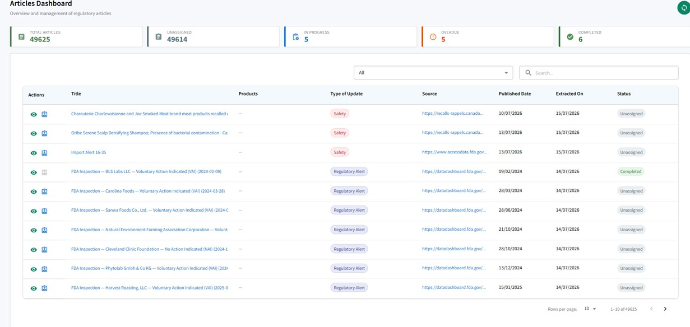

NoteIQ monitors the authorities you operate under and routes only the relevant updates to each team, ready to review, action and trace.
Regulatory updates never stop. The work is knowing which ones affect your products and processes.
It watches the authorities you operate under, filters every update down to the ones that affect each team's products, processes and markets, and turns them into tracked, auditable work. No scanning agency sites, and no change that matters lost in the noise.
Each team sees only the updates that touch its products, processes and markets, not the full firehose.
Create and assign tasks against any update, traced through review and approval to closure.
Every action is timestamped and 21 CFR Part 11 aligned, ready to show at inspection.
Every update the authorities publish lands in one dashboard: classified, assigned and tracked from arrival through review to closure, with the count of what is unassigned, in progress, overdue and complete always in view.

The articles dashboard: volume, status and every update in one view.
Pharmacovigilance, quality and regulatory affairs all work from the same source, but no two teams see the same list. Each gets a view pre-filtered to its area of operation and the markets it covers, so nobody sifts the firehose to find what matters. It arrives already filtered.
Safety and signal updates for the products and markets it monitors.
GMP, GDP and inspection-related updates for the sites it runs.
Labelling, CMC and marketing-authorisation changes for its portfolio.
The same platform, two views: each team's own board, filtered to what it owns, and a single update carried through review and approval into an assigned, traceable task.
NoteIQ covers five regulatory authorities today, across the markets our clients work in. More authorities and translations are planned for upcoming releases.
Authorities covered today
FDA · United States Health Canada MHRA · United Kingdom EMA · Europe TGA · AustraliaAcross the update types that matter
Safety Safety Timelines CMC Clinical Labelling Clinical Trials Marketing Authorisations GMP/GDP Drug Master File FeesNoteIQ tags each update by type and product, writes a plain-language summary of dense regulatory text, and flags the likely impact and next steps. A qualified person reviews and decides. The AI capabilities run on PivotAI, the AI layer inside PivotOS.
Your content stays yours: it is never used to train foundation models and stays isolated to your organisation.
Classifies each update by type and the products it mentions.
Turns dense regulatory documents into a few clear lines.
Flags what an update means and what to do about it, for a reviewer to confirm.
Nothing critical is released without a human reviewer in the chain.
Every update, decision and task is timestamped and searchable, tracked to closure and 21 CFR Part 11 aligned. Regulatory awareness you can prove, not just claim.
Read the AI Trust Centre for how we govern AI in regulated work.
We will show relevance filtering, per-team views and the audit trail on the authorities you track.